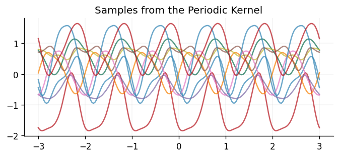
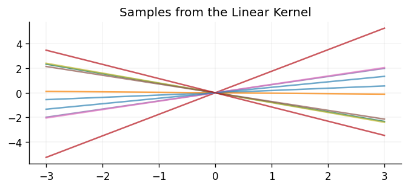
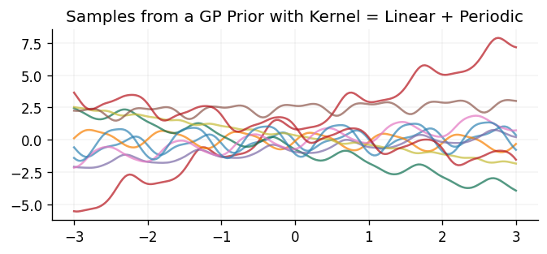
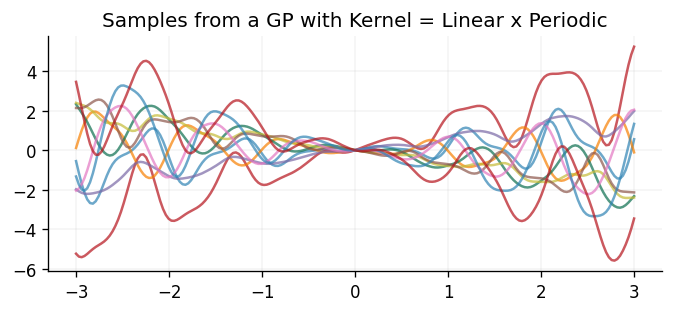

Introduction to Kernels
In this guide we provide an introduction to kernels, and the role they play in Gaussian process models.
# Enable Float64 for more stable matrix inversions.
from jax import config
import jax.numpy as jnp
import jax.random as jr
from jaxtyping import (
Float,
install_import_hook,
)
import matplotlib as mpl
import matplotlib.pyplot as plt
import optax as ox
import pandas as pd
from sklearn.preprocessing import StandardScaler
from examples.utils import use_mpl_style
from gpjax.parameters import Static
from gpjax.typing import Array
config.update("jax_enable_x64", True)
with install_import_hook("gpjax", "beartype.beartype"):
import gpjax as gpx
key = jr.key(42)
# set the default style for plotting
use_mpl_style()
cols = mpl.rcParams["axes.prop_cycle"].by_key()["color"]
Using Gaussian Processes (GPs) to model functions can offer several advantages over alternative methods, such as deep neural networks. One key advantage is their rich quantification of uncertainty; not only do they provide point estimates for the values taken by a function throughout its domain, but they provide a full predictive posterior distribution over the range of values the function may take. This rich quantification of uncertainty is useful in many applications, such as Bayesian optimisation, which relies on being able to make uncertainty-aware decisions.
However, another advantage of GPs is the ability for one to place priors on the functions being modelled. For instance, one may know that the underlying function being modelled observes certain characteristics, such as being periodic or having a certain level of smoothness. The kernel, or covariance function, is the primary means through which one is able to encode such prior knowledge about the function being modelled. This enables one to equip the GP with inductive biases which enable it to learn from data more efficiently, whilst generalising to unseen data more effectively.
In this notebook we'll develop some intuition for what kinds of priors are encoded through the use of different kernels, and how this can be useful when modelling different types of functions.
What is a Kernel?
Intuitively, for a function \(f\), the kernel defines the notion of similarity between the value of the function at two points, \(f(\mathbf{x})\) and \(f(\mathbf{x}')\), and will be denoted as \(k(\mathbf{x}, \mathbf{x}')\):
One would expect that, given a previously unobserved test point \(\mathbf{x}^*\), the training points which are closest to this unobserved point will be most similar to it. As such, the kernel is used to define this notion of similarity within the GP framework. It is up to the user to select a kernel function which is appropriate for the function being modelled. In this notebook we are going to give some examples of commonly used kernels, and try to develop an understanding of when one may wish to use one kernel over another. However, before we do this, it is worth discussing the necessary conditions for a function to be a valid kernel/covariance function. This requires a little bit of maths, so for those of you who just wish to obtain an intuitive understanding, feel free to skip to the section introducing the Matérn family of kernels.
What are the necessary conditions for a function to be a valid kernel?
Whilst intuitively the kernel function is used to define the notion of similarity within the GP framework, it is important to note that there are two necessary conditions that a kernel function must satisfy in order to be a valid covariance function. For clarity, we will refer to any function mapping two inputs to a scalar output as a kernel function, and we will refer to a valid kernel function satisfying the two necessary conditions as a covariance function. However, it is worth noting that the GP community often uses the terms kernel function and covariance function interchangeably.
The first necessary condition is that the covariance function must be symmetric, i.e. \(k(\mathbf{x}, \mathbf{x}') = k(\mathbf{x}', \mathbf{x})\). This is because the covariance between two random variables \(X\) and \(X'\) is symmetric; if one looks at the definition of covariance given above, it is clear that it is invariant to swapping the order of the inputs \(\mathbf{x}\) and \(\mathbf{x}'\).
The second necessary condition is that the covariance function must be positive semi-definite (PSD). In order to understand this condition, it is useful to first introduce the concept of a Gram matrix. We'll use the same notation as the GP introduction notebook, and denote \(n\) input points as \(\mathbf{X} = \{\mathbf{x}_1, \ldots, \mathbf{x}_n\}\). Given these input points and a kernel function \(k\) the Gram matrix stores the pairwise kernel evaluations between all input points. Mathematically, this leads to the Gram matrix being defined as:
such that \(K(\mathbf{X}, \mathbf{X})_{ij} = k(\mathbf{x}_i, \mathbf{x}_j)\).
In order for \(k\) to be a valid covariance function, the corresponding Gram matrix must be positive semi-definite. In this case the Gram matrix is referred to as a covariance matrix. A real \(n \times n\) matrix \(K\) is positive semi-definite if and only if for all vectors \(\mathbf{z} \in \mathbb{R}^n\):
Alternatively, a real \(n \times n\) matrix \(K\) is positive semi-definite if and only if all of its eigenvalues are non-negative.
Therefore, the two necessary conditions for a function to be a valid covariance function are that it must be symmetric and positive semi-definite. In this section we have referred to any function from two inputs to a scalar output as a kernel function, with its corresponding matrix of pairwise evaluations referred to as the Gram matrix, and a function satisfying the two necessary conditions as a covariance function, with its corresponding matrix of pairwise evaluations referred to as the covariance matrix. This enabled us to easily define the necessary conditions for a function to be a valid covariance function. However, as noted previously, the GP community often uses these terms interchangeably, and so we will for the remainder of this notebook.
Introducing a Common Family of Kernels - The Matérn Family
One of the most widely used families of kernels is the Matérn family (Matérn, 1960). These kernels take on the following form:
where \(K_{\nu}\) is a modified Bessel function, \(\nu\), \(\kappa\) and \(\sigma^2\) are hyperparameters specifying the mean-square differentiability, lengthscale and variability respectively, and \(|\cdot|\) is used to denote the Euclidean norm. Note that for those of you less interested in the mathematical underpinnings of kernels, it isn't necessary to understand the exact functional form of the Matérn kernels to gain an understanding of how they behave. The key takeaway is that they are parameterised by several hyperparameters, and that these hyperparameters dictate the behaviour of functions sampled from the corresponding GP. The plots below will provide some more intuition for how these hyperparameters affect the behaviour of functions sampled from the corresponding GP.
Some commonly used Matérn kernels use half-integer values of \(\nu\), such as \(\nu = 1/2\) or \(\nu = 3/2\). The fraction is sometimes omitted when naming the kernel, so that \(\nu = 1/2\) is referred to as the Matérn12 kernel, and \(\nu = 3/2\) is referred to as the Matérn32 kernel. When \(\nu\) takes in a half-integer value, \(\nu = k + 1/2\), the kernel can be expressed as the product of a polynomial of order \(k\) and an exponential:
In the limit of \(\nu \to \infty\) this yields the squared-exponential, or radial basis function (RBF), kernel, which is infinitely mean-square differentiable:
But what kind of functions does this kernel encode prior knowledge about? Let's take a look at some samples from GP priors defined used Matérn kernels with different values of \(\nu\):
kernels = [
gpx.kernels.Matern12(),
gpx.kernels.Matern32(),
gpx.kernels.Matern52(),
gpx.kernels.RBF(),
]
fig, axes = plt.subplots(ncols=2, nrows=2, figsize=(7, 6), tight_layout=True)
x = jnp.linspace(-3.0, 3.0, num=200).reshape(-1, 1)
meanf = gpx.mean_functions.Zero()
for k, ax in zip(kernels, axes.ravel(), strict=False):
prior = gpx.gps.Prior(mean_function=meanf, kernel=k)
rv = prior(x)
y = rv.sample(seed=key, sample_shape=(10,))
ax.plot(x, y.T, alpha=0.7)
ax.set_title(k.name)
The plots above clearly show that the choice of \(\nu\) has a large impact on the smoothness of the functions being modelled by the GP, with functions drawn from GPs defined with the Matérn kernel becoming increasingly smooth as \(\nu \to \infty\). More formally, this notion of smoothness is captured through the mean-square differentiability of the function being modelled. Functions sampled from GPs using a Matérn kernel are \(k\)-times mean-square differentiable, if and only if \(\nu > k\). For instance, functions sampled from a GP using a Matérn12 kernel are zero times mean-square differentiable, and functions sampled from a GP using the RBF kernel are infinitely mean-square differentiable.
As an important aside, a general property of the Matérn family of kernels is that they are examples of stationary kernels. This means that they only depend on the displacement of the two points being compared, \(\mathbf{x} - \mathbf{x}'\), and not on their absolute values. This is a useful property to have, as it means that the kernel is invariant to translations in the input space. They also go beyond this, as they only depend on the Euclidean distance between the two points being compared, \(|\mathbf{x} - \mathbf{x}'|\). Kernels which satisfy this property are known as isotropic kernels. This makes the function invariant to all rigid motions in the input space, such as rotations.
Inferring Kernel Hyperparameters
Most kernels have several hyperparameters, which we denote \(\mathbf{\theta}\), which encode different assumptions about the underlying function being modelled. For the Matérn family described above, \(\mathbf{\theta} = \{\nu, \kappa, \sigma\}\). A fully Bayesian approach to dealing with hyperparameters would be to place a prior over them, and marginalise over the posterior derived from the data in order to perform predictions. However, this is often computationally very expensive, and so a common approach is to instead optimise the hyperparameters by maximising the log marginal likelihood of the data. Given training data \(\mathbf{D} = (\mathbf{X}, \mathbf{y})\), assumed to contain some additive Gaussian noise \(\epsilon \sim \mathcal{N}(0, \sigma^2)\), the log marginal likelihood of the dataset is defined as:
This expression can then be maximised with respect to the hyperparameters using a gradient-based approach such as Adam or L-BFGS. Note that we may choose to fix some hyperparameters, and in GPJax the parameter \(\nu\) is set by the user, and not inferred though optimisation. For more details on using the log marginal likelihood to optimise kernel hyperparameters, see our GP introduction notebook.
We'll demonstrate the advantages of being able to infer kernel parameters from the training data by fitting a GP to the widely used Forrester function:
# Forrester function
def forrester(x: Float[Array, "N"]) -> Float[Array, "N"]: # noqa: F821
return (6 * x - 2) ** 2 * jnp.sin(12 * x - 4)
n = 13
training_x = jr.uniform(key=key, minval=0, maxval=1, shape=(n,)).reshape(-1, 1)
training_y = forrester(training_x)
D = gpx.Dataset(X=training_x, y=training_y)
test_x = jnp.linspace(0, 1, 100).reshape(-1, 1)
test_y = forrester(test_x)
First we define our model, using the Matérn52 kernel, and construct our posterior without optimising the kernel hyperparameters:
mean = gpx.mean_functions.Zero()
kernel = gpx.kernels.Matern52(
lengthscale=jnp.array(0.1)
) # Initialise our kernel lengthscale to 0.1
prior = gpx.gps.Prior(mean_function=mean, kernel=kernel)
likelihood = gpx.likelihoods.Gaussian(
num_datapoints=D.n, obs_stddev=Static(jnp.array(1e-3))
) # Our function is noise-free, so we set the observation noise's standard deviation to a very small value
no_opt_posterior = prior * likelihood
We can then optimise the hyperparameters by minimising the negative log marginal likelihood of the data:
Array(-19.18644709, dtype=float64)
opt_posterior, history = gpx.fit_scipy(
model=no_opt_posterior,
objective=lambda p, d: -gpx.objectives.conjugate_mll(p, d),
train_data=D,
)
Optimization terminated successfully.
Current function value: 2.545694
Iterations: 18
Function evaluations: 21
Gradient evaluations: 21
Having optimised the hyperparameters, we can now make predictions using the posterior with the optimised hyperparameters, and compare them to the predictions made using the posterior with the default hyperparameters:
def plot_ribbon(ax, x, dist, color):
mean = dist.mean()
std = dist.stddev()
ax.plot(x, mean, label="Predictive mean", color=color)
ax.fill_between(
x.squeeze(),
mean - 2 * std,
mean + 2 * std,
alpha=0.2,
label="Two sigma",
color=color,
)
ax.plot(x, mean - 2 * std, linestyle="--", linewidth=1, color=color)
ax.plot(x, mean + 2 * std, linestyle="--", linewidth=1, color=color)
opt_latent_dist = opt_posterior.predict(test_x, train_data=D)
opt_predictive_dist = opt_posterior.likelihood(opt_latent_dist)
opt_predictive_mean = opt_predictive_dist.mean()
opt_predictive_std = opt_predictive_dist.stddev()
fig, (ax1, ax2) = plt.subplots(2, 1, figsize=(5, 6))
ax1.plot(
test_x, test_y, label="Latent function", color=cols[0], linestyle="--", linewidth=2
)
ax1.plot(training_x, training_y, "x", label="Observations", color="k", zorder=5)
plot_ribbon(ax1, test_x, opt_predictive_dist, color=cols[1])
ax1.set_title("Posterior with Hyperparameter Optimisation")
ax1.legend(loc="center left", bbox_to_anchor=(0.975, 0.5))
no_opt_latent_dist = no_opt_posterior.predict(test_x, train_data=D)
no_opt_predictive_dist = no_opt_posterior.likelihood(no_opt_latent_dist)
ax2.plot(
test_x, test_y, label="Latent function", color=cols[0], linestyle="--", linewidth=2
)
ax2.plot(training_x, training_y, "x", label="Observations", color="k", zorder=5)
plot_ribbon(ax2, test_x, no_opt_predictive_dist, color=cols[1])
ax2.set_title("Posterior without Hyperparameter Optimisation")
ax2.legend(loc="center left", bbox_to_anchor=(0.975, 0.5))
<matplotlib.legend.Legend at 0x7f80ad1d3eb0>

We can see that optimising the hyperparameters by minimising the negative log marginal likelihood of the data results in a more faithful fit of the GP to the data. In particular, we can observe that the GP using optimised hyperparameters is more accurately able to reflect uncertainty in its predictions, as opposed to the GP using the default parameters, which is overconfident in its predictions.
The lengthscale, \(\kappa\), and variance, \(\sigma^2\), are shown below, both before and after optimisation:
no_opt_lengthscale = no_opt_posterior.prior.kernel.lengthscale
no_opt_variance = no_opt_posterior.prior.kernel.variance
opt_lengthscale = opt_posterior.prior.kernel.lengthscale
opt_variance = opt_posterior.prior.kernel.variance
print(f"Optimised Lengthscale: {opt_lengthscale} and Variance: {opt_variance}")
print(
f"Non-Optimised Lengthscale: {no_opt_lengthscale} and Variance: {no_opt_variance}"
)
Optimised Lengthscale: [38;2;79;201;177mPositiveReal[0m[38;2;255;213;3m([0m[38;2;105;105;105m # 1 (8 B)[0m
[38;2;156;220;254mvalue[0m[38;2;212;212;212m=[0mArray(0.27113679, dtype=float64),
[38;2;156;220;254m_tag[0m[38;2;212;212;212m=[0m[38;2;207;144;120m"'positive'"[0m
[38;2;255;213;3m)[0m and Variance: [38;2;79;201;177mPositiveReal[0m[38;2;255;213;3m([0m[38;2;105;105;105m # 1 (8 B)[0m
[38;2;156;220;254mvalue[0m[38;2;212;212;212m=[0mArray(24.79013316, dtype=float64),
[38;2;156;220;254m_tag[0m[38;2;212;212;212m=[0m[38;2;207;144;120m"'positive'"[0m
[38;2;255;213;3m)[0m
Non-Optimised Lengthscale: [38;2;79;201;177mPositiveReal[0m[38;2;255;213;3m([0m[38;2;105;105;105m # 1 (8 B)[0m
[38;2;156;220;254mvalue[0m[38;2;212;212;212m=[0mArray(0.1, dtype=float64, weak_type=True),
[38;2;156;220;254m_tag[0m[38;2;212;212;212m=[0m[38;2;207;144;120m"'positive'"[0m
[38;2;255;213;3m)[0m and Variance: [38;2;79;201;177mPositiveReal[0m[38;2;255;213;3m([0m[38;2;105;105;105m # 1 (8 B)[0m
[38;2;156;220;254mvalue[0m[38;2;212;212;212m=[0mArray(1., dtype=float64, weak_type=True),
[38;2;156;220;254m_tag[0m[38;2;212;212;212m=[0m[38;2;207;144;120m"'positive'"[0m
[38;2;255;213;3m)[0m
Expressing Other Priors with Different Kernels
Whilst the Matérn kernels are often used as a first choice of kernel, and they often perform well due to their smoothing properties often being well-aligned with the properties of the underlying function being modelled, sometimes more prior knowledge is known about the function being modelled. For instance, it may be known that the function being modelled is periodic. In this case, a suitable kernel choice would be the periodic kernel:
with \(D\) being the dimensionality of the inputs.
Below we show \(10\) samples drawn from a GP prior using the periodic kernel:
mean = gpx.mean_functions.Zero()
kernel = gpx.kernels.Periodic()
prior = gpx.gps.Prior(mean_function=mean, kernel=kernel)
x = jnp.linspace(-3.0, 3.0, num=200).reshape(-1, 1)
rv = prior(x)
y = rv.sample(seed=key, sample_shape=(10,))
fig, ax = plt.subplots()
ax.plot(x, y.T, alpha=0.7)
ax.set_title("Samples from the Periodic Kernel")
plt.show()

In other scenarios, it may be known that the underlying function is linear, in which case the linear kernel would be a suitable choice:
Unlike the kernels shown above, the linear kernel is not stationary, and so it is not invariant to translations in the input space.
Below we show \(10\) samples drawn from a GP prior using the linear kernel:
mean = gpx.mean_functions.Zero()
kernel = gpx.kernels.Linear()
prior = gpx.gps.Prior(mean_function=mean, kernel=kernel)
x = jnp.linspace(-3.0, 3.0, num=200).reshape(-1, 1)
rv = prior(x)
y = rv.sample(seed=key, sample_shape=(10,))
fig, ax = plt.subplots()
ax.plot(x, y.T, alpha=0.7)
ax.set_title("Samples from the Linear Kernel")
plt.show()

Composing Kernels
It is also mathematically valid to compose kernels through operations such as addition and multiplication in order to produce more expressive kernels. For the mathematically interested amongst you, this is valid as the resulting kernel functions still satisfy the necessary conditions introduced at the start of this notebook. Adding or multiplying kernel functions is equivalent to performing elementwise addition or multiplication of the corresponding covariance matrices, and fortunately symmetric, positive semi-definite kernels are closed under these operations. This means that kernels produced by adding or multiplying other kernels will also be symmetric and positive semi-definite, and so will also be valid kernels. GPJax provides the functionality required to easily compose kernels via addition and multiplication, which we'll demonstrate below.
First, we'll take a look at some samples drawn from a GP prior using a kernel which is composed of the sum of a linear kernel and a periodic kernel:
kernel_one = gpx.kernels.Linear()
kernel_two = gpx.kernels.Periodic()
sum_kernel = gpx.kernels.SumKernel(kernels=[kernel_one, kernel_two])
mean = gpx.mean_functions.Zero()
prior = gpx.gps.Prior(mean_function=mean, kernel=sum_kernel)
x = jnp.linspace(-3.0, 3.0, num=200).reshape(-1, 1)
rv = prior(x)
y = rv.sample(seed=key, sample_shape=(10,))
fig, ax = plt.subplots()
ax.plot(x, y.T, alpha=0.7)
ax.set_title("Samples from a GP Prior with Kernel = Linear + Periodic")
plt.show()

We can see that the samples drawn behave as one would naturally expect through adding the two kernels together. In particular, the samples are still periodic, as with the periodic kernel, but their mean also linearly increases/decreases as they move away from the origin, as seen with the linear kernel.
Below we take a look at some samples drawn from a GP prior using a kernel which is composed of the same two kernels, but this time multiplied together:
kernel_one = gpx.kernels.Linear()
kernel_two = gpx.kernels.Periodic()
sum_kernel = gpx.kernels.ProductKernel(kernels=[kernel_one, kernel_two])
mean = gpx.mean_functions.Zero()
prior = gpx.gps.Prior(mean_function=mean, kernel=sum_kernel)
x = jnp.linspace(-3.0, 3.0, num=200).reshape(-1, 1)
rv = prior(x)
y = rv.sample(seed=key, sample_shape=(10,))
fig, ax = plt.subplots()
ax.plot(x, y.T, alpha=0.7)
ax.set_title("Samples from a GP with Kernel = Linear x Periodic")
plt.show()

Once again, the samples drawn behave as one would naturally expect through multiplying the two kernels together. In particular, the samples are still periodic but their mean linearly increases/decreases as they move away from the origin, and the amplitude of the oscillations also linearly increases with increasing distance from the origin.
Putting it All Together on a Real-World Dataset
Mauna Loa CO2 Dataset
We'll put together some of the ideas we've discussed in this notebook by fitting a GP to the Mauna Loa CO2 dataset. This dataset measures atmospheric CO2 concentration at the Mauna Loa Observatory in Hawaii, and is widely used in the GP literature. It contains monthly CO2 readings starting in March 1958. Interestingly, there was an eruption at the Mauna Loa volcano in November 2022, so readings from December 2022 have changed to a site roughly 21 miles North of the Mauna Loa Observatory. We'll use the data from March 1958 to November 2022, and see how our GP extrapolates to 8 years before and after the data in the training set.
First we'll load the data and plot it:
co2_data = pd.read_csv(
"https://gml.noaa.gov/webdata/ccgg/trends/co2/co2_mm_mlo.csv", comment="#"
)
co2_data = co2_data.loc[co2_data["decimal date"] < 2022 + 11 / 12]
train_x = co2_data["decimal date"].values[:, None]
train_y = co2_data["average"].values[:, None]
fig, ax = plt.subplots()
ax.plot(train_x, train_y)
ax.set_title("CO2 Concentration in the Atmosphere")
ax.set_xlabel("Year")
ax.set_ylabel("CO2 Concentration (ppm)")
plt.show()
Looking at the data, we can see that there is clearly a periodic trend, with a period of roughly 1 year. We can also see that the data is increasing over time, which is also expected. This looks roughly linear, although it may have a non-linear component. This information will be useful when we come to choose our kernel.
First, we'll construct our GPJax dataset, and will standardise the outputs, to match our assumption that the data has zero mean.
test_x = jnp.linspace(1950, 2030, 5000, dtype=jnp.float64).reshape(-1, 1)
y_scaler = StandardScaler().fit(train_y)
standardised_train_y = y_scaler.transform(train_y)
D = gpx.Dataset(X=train_x, y=standardised_train_y)
Having constructed our dataset, we'll now define our kernel. We'll use a kernel which is composed of the sum of a linear kernel and a periodic kernel, as we saw in the previous section that this kernel is able to capture both the periodic and linear trends in the data. We'll also add an RBF kernel to the sum, which will allow us to capture any non-linear trends in the data:
mean = gpx.mean_functions.Zero()
rbf_kernel = gpx.kernels.RBF(lengthscale=100.0)
periodic_kernel = gpx.kernels.Periodic()
linear_kernel = gpx.kernels.Linear(variance=0.001)
sum_kernel = gpx.kernels.SumKernel(kernels=[linear_kernel, periodic_kernel])
final_kernel = gpx.kernels.SumKernel(kernels=[rbf_kernel, sum_kernel])
prior = gpx.gps.Prior(mean_function=mean, kernel=final_kernel)
likelihood = gpx.likelihoods.Gaussian(num_datapoints=D.n)
posterior = prior * likelihood
With our model constructed, let's now fit it to the data, by minimising the negative log marginal likelihood of the data:
def loss(posterior, data):
return -gpx.objectives.conjugate_mll(posterior, data)
opt_posterior, history = gpx.fit(
model=posterior,
objective=loss,
train_data=D,
optim=ox.adamw(learning_rate=1e-2),
num_iters=500,
key=key,
)
0%| | 0/500 [00:00<?, ?it/s]
Now we can obtain the model's prediction over a period of time which includes the training data, as well as 8 years before and after the training data:
latent_dist = opt_posterior.predict(test_x, train_data=D)
predictive_dist = opt_posterior.likelihood(latent_dist)
predictive_mean = predictive_dist.mean().reshape(-1, 1)
predictive_std = predictive_dist.stddev().reshape(-1, 1)
Let's plot the model's predictions over this period of time:
fig, ax = plt.subplots(figsize=(10, 5))
ax.plot(
train_x, standardised_train_y, "x", label="Observations", color=cols[0], alpha=0.5
)
ax.fill_between(
test_x.squeeze(),
predictive_mean.squeeze() - 2 * predictive_std.squeeze(),
predictive_mean.squeeze() + 2 * predictive_std.squeeze(),
alpha=0.2,
label="Two sigma",
color=cols[1],
)
ax.plot(
test_x,
predictive_mean - 2 * predictive_std,
linestyle="--",
linewidth=1,
color=cols[1],
)
ax.plot(
test_x,
predictive_mean + 2 * predictive_std,
linestyle="--",
linewidth=1,
color=cols[1],
)
ax.plot(test_x, predictive_mean, label="Predictive mean", color=cols[1])
ax.set_xlabel("Year")
ax.legend(loc="center left", bbox_to_anchor=(0.975, 0.5))
<matplotlib.legend.Legend at 0x7f80ac5ea8f0>
We can see that the model seems to have captured the periodic trend in the data, as well as the (roughly) linear trend. This enables our model to make reasonable seeming predictions over the 8 years before and after the training data. Let's zoom in on the period from 2010 onwards:
fig, ax = plt.subplots(figsize=(10, 5))
ax.plot(
train_x[train_x >= 2010],
standardised_train_y[train_x >= 2010],
"x",
label="Observations",
color=cols[0],
alpha=0.5,
)
ax.fill_between(
test_x[test_x >= 2010].squeeze(),
predictive_mean[test_x >= 2010] - 2 * predictive_std[test_x >= 2010],
predictive_mean[test_x >= 2010] + 2 * predictive_std[test_x >= 2010],
alpha=0.2,
label="Two sigma",
color=cols[1],
)
ax.plot(
test_x[test_x >= 2010],
predictive_mean[test_x >= 2010] - 2 * predictive_std[test_x >= 2010],
linestyle="--",
linewidth=1,
color=cols[1],
)
ax.plot(
test_x[test_x >= 2010],
predictive_mean[test_x >= 2010] + 2 * predictive_std[test_x >= 2010],
linestyle="--",
linewidth=1,
color=cols[1],
)
ax.plot(
test_x[test_x >= 2010],
predictive_mean[test_x >= 2010],
label="Predictive mean",
color=cols[1],
)
ax.set_xlabel("Year")
ax.legend(loc="center left", bbox_to_anchor=(0.975, 0.5))
<matplotlib.legend.Legend at 0x7f80ac463fd0>
This certainly looks like a reasonable fit to the data, with sensible extrapolation beyond the training data, which finishes in November 2022. Moreover, the learned parameters of the kernel are interpretable. Let's take a look at the learned period of the periodic kernel:
print(
"Periodic Kernel Period:"
f" {[i for i in opt_posterior.prior.kernel.kernels if isinstance(i, gpx.kernels.Periodic)][0].period}"
)
Periodic Kernel Period: [38;2;79;201;177mPositiveReal[0m[38;2;255;213;3m([0m[38;2;105;105;105m # 1 (8 B)[0m
[38;2;156;220;254mvalue[0m[38;2;212;212;212m=[0mArray(0.99962104, dtype=float64),
[38;2;156;220;254m_tag[0m[38;2;212;212;212m=[0m[38;2;207;144;120m"'positive'"[0m
[38;2;255;213;3m)[0m
This tells us that the periodic trend learned has a period of \(\approx 1\). This makes intuitive sense, as the unit of the input data is years, and we can see that the periodic trend tends to repeat itself roughly every year!
Defining Kernels on Non-Euclidean Spaces
In this notebook, we have focused solely on kernels whose domain resides in Euclidean space. However, what if one wished to work with data whose domain is non-Euclidean? For instance, one may wish to work with graph-structured data, or data which lies on a manifold, or even strings. Fortunately, kernels exist for a wide variety of domains. Whilst this is beyond the scope of this notebook, feel free to checkout out our notebook on graph kernels for an introduction on how to define the Matérn kernel on graph-structured data, and there are a wide variety of resources online for learning about defining kernels in other domains. In terms of open-source libraries, the Geometric Kernels library could be a good place to start if you're interested in looking at how these kernels may be implemented, with the additional benefit that it is compatible with GPJax.
Further Reading
Congratulations on making it this far! We hope that this guide has given you a good introduction to kernels and how they can be used in GPJax. If you're interested in learning more about kernels, we recommend the following resources, which have also been used as inspiration for this guide:
- Gaussian Processes for Machine Learning - Chapter 4 provides a comprehensive overview of kernels, diving deep into some of the technical details and also providing some kernels defined on non-Euclidean spaces such as strings.
- David Duvenaud's Kernel Cookbook is a great resource for learning about kernels, and also provides some information about some of the pitfalls people commonly encounter when using the Matérn family of kernels. His PhD thesis, Automatic Model Construction with Gaussian Processes, also provides some in-depth recipes for how one may incorporate their prior knowledge when constructing kernels.
- Finally, please check out our more advanced kernel guide, which details some more kernels available in GPJax as well as how one may combine kernels together to form more complex kernels.
System Configuration
Author: Thomas Christie
Last updated: Fri Apr 11 2025
Python implementation: CPython
Python version : 3.10.16
IPython version : 8.35.0
jax : 0.5.3
pandas : 2.2.3
matplotlib: 3.10.1
optax : 0.2.4
gpjax : 0.10.1
jaxtyping : 0.3.1
sklearn : 1.6.1
Watermark: 2.5.0